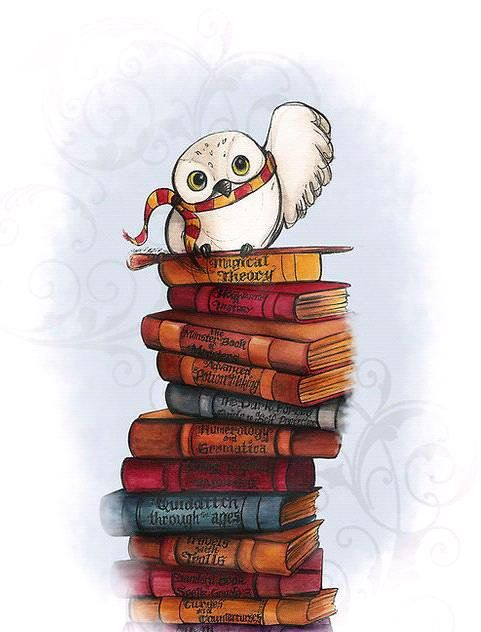
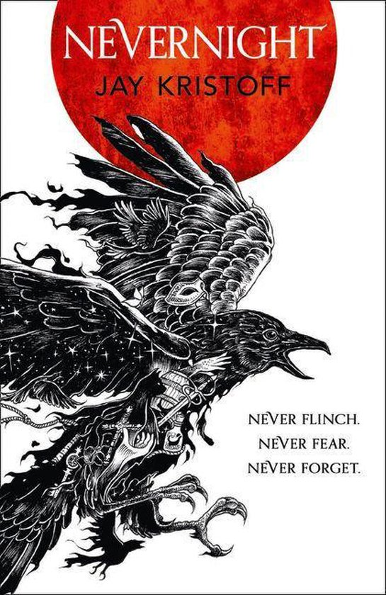
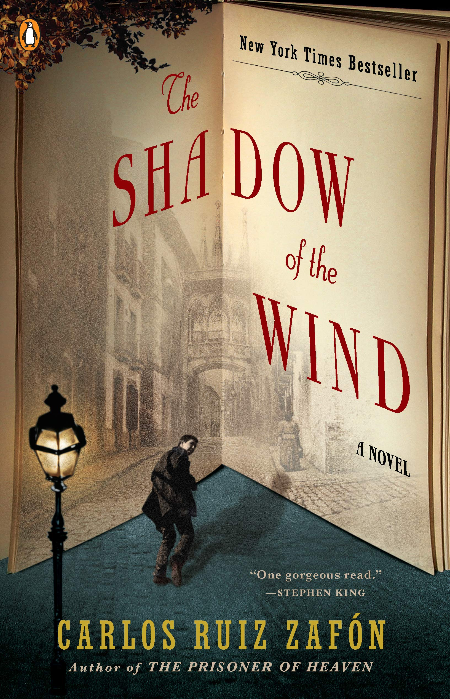
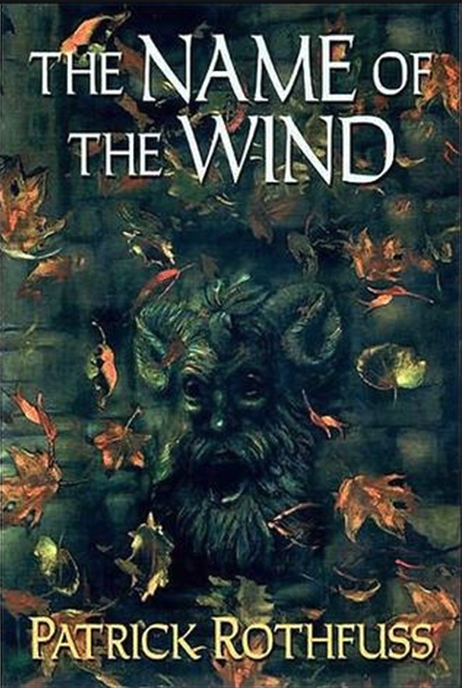

| The Nevernight Chronicles, by Jay KristoffAt it's core this is your classic fantasy story: orphaned girl gets adopted into a secret brotherhood and sets out to avenge her murdered parents. Kristoff however amply compensates his chlichéd premise with immaculate world building, fun characters and great prose. If you're not looking for grand literature but just want to have a fun fantasy read, this is the one to pick up. |  |
| The Shadow of the Wind, by Carlos Ruiz ZafónI felt like I needed to include something slightly more literary on this list, and while I seriously considered going on a two paragraph rant about the greatness that is The Lord of the Rings, I'm pretty sure anyone with a passing interest in that has already picked it up in some form or another, so here we are. Zafón's first novel in his much acclaimed Cemetery of Forgotten Books series follows a boy named Daniel Sempere against the backdrop of Francoist Spain, as he tries to uncover the mystery behind 'The Shadow of the Wind'. A mysterious book he found in the Library of Forgotten Books where, surprisingly, the world's forgotten books are kept. While I am not a fan of every plot beat (the main twist can be spotted fairly early on) Zafón's prose is absolutely amazing, making the book an increadibly enjoyable read. I actually prefered the Dutch translation for this one. Not sure how it stacks up against the Spanish original but I felt it had a leg up against the English copy. |  |
| The Name of the Wind, by Patrick RothfussAt the risk of falling into the trap I tried to avoid by not listing the Lord of the Rings, The Name of the Wind deserves a mention. While by no means a flawless book it, like Nevernight, is an incredibly enjoyable fantasy adventure. Rothfuss has a knack for crafting interesting locations and compelling hooks, making this one hard to put down. Kvothe's adventures are thrilling and excitable, even if he sometimes is a bit of a Mary Sue. While still very enjoyable it's sequel, 'The Wise Man's Fear', was a bit of a step down. Hopefully the third part of the Trilogy, 'The Doors of Stone', will tie at all neatly together upon release... Whenever that may be. |  |